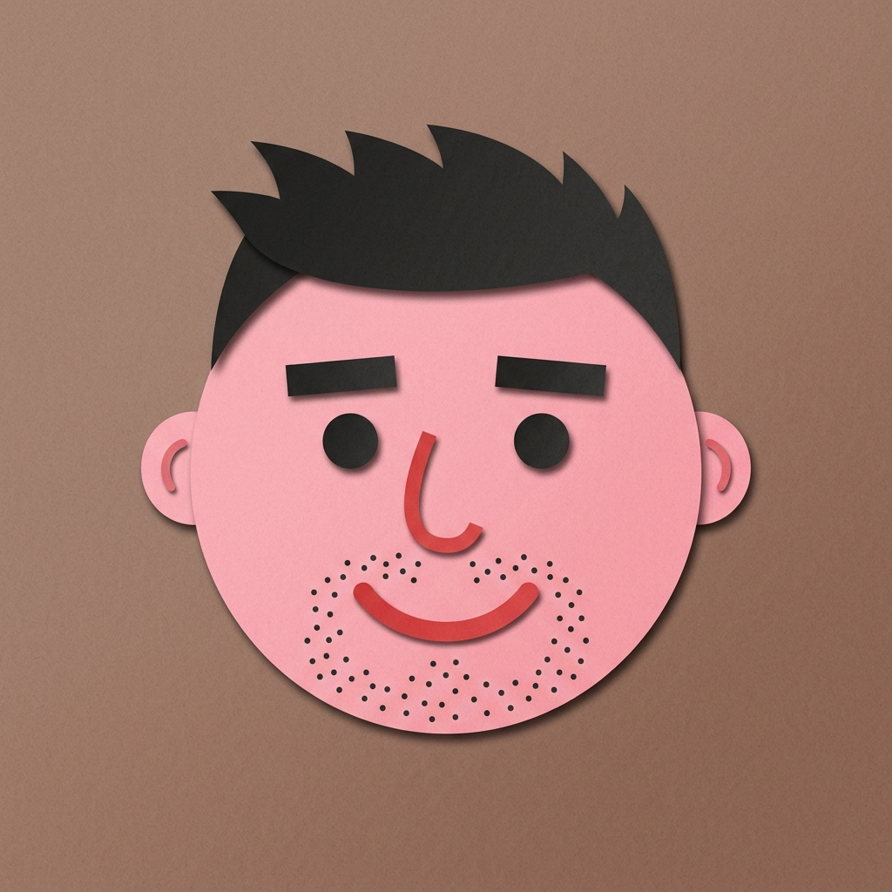
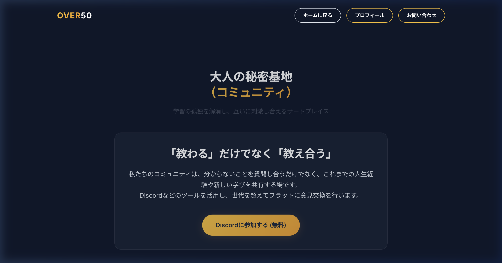

プロフィール
運営者について
現状

↓
理想

運営者
1974年生まれ / 50代からのITチャレンジャー
📍 在住：京都府
🏃 趣味：ランニング、サイクリング、筋トレ
ITの基礎を体系的に学ぶため、2022年に通信制大学である「東京通信大学 情報マネジメント学部」へ入学。フルタイムの仕事を続けながら、社会人と学生を両立する生活を4年間続け、令和8年（2026年）3月に卒業。
これまでに「基本情報技術者試験」および「情報セキュリティマネジメント試験」に合格し、資格を取得。現在はさらなるステップアップとして、「情報処理安全確保支援士」の合格に向けて日々勉強に励んでいます。
50歳を過ぎてからでも、新しい知識やテクノロジーを身につけることで、人生の後半戦を「黄金期」に変えることができると信じています。何歳になっても「挑戦を楽しむ」姿勢を大切に、このサイトを通じて私自身の学びの過程を共有し、同世代の皆さんと共に成長していきたいと考えています。
💚 LINEオープンチャット
「OVER50 デジタル相談室」
QRコードを読み取るか、ボタンから参加できます（参加承認制・無料）

💚 LINEオープンチャットに参加する（無料）